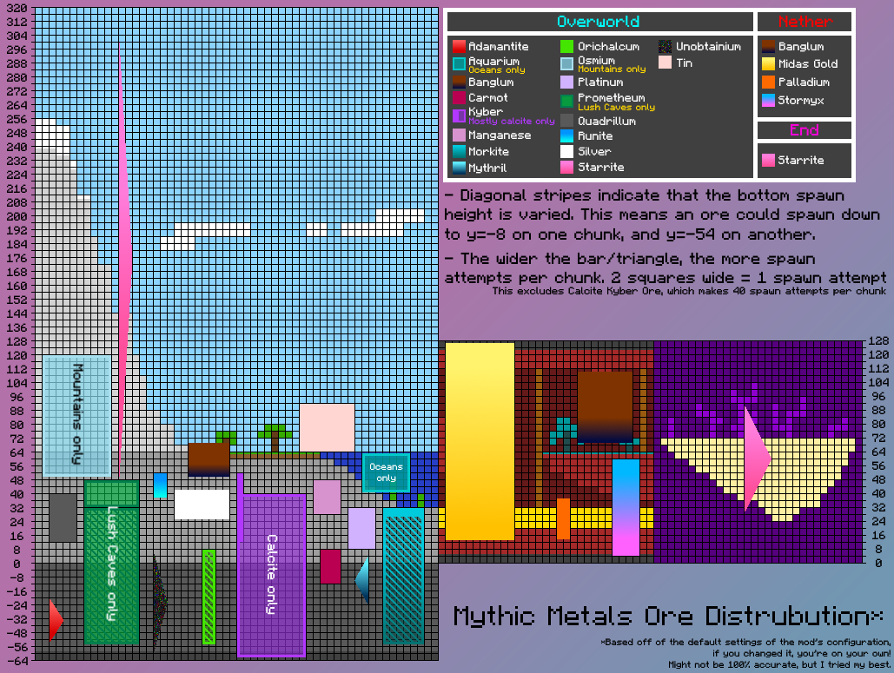

常见问题解答¶
本模组有引导吗？¶
请阅读游戏中的进展页面，其中包含大量有关哪些材料有趣的详细信息，还有合金配方。请注意，其中有两个成就涉及合金冶炼炉，它们直接提示了你需要使用哪个等级的冶炼炉来锻造特定的合金。
我应当如何制造合金？¶
建造一个冶炼炉。在未作任何修改的一般神话金属设定中，二级冶炼炉可以制造任何合金。
我应当如何制作 xxx？¶
所有配方遵循原版模式。例如，制作镐时按照镐的配方（即 3 个圆石和 2 根木棍的模式），或者使用关联的锻造模板。
其余的配方（包括合金配方）可以通过像 Roughly Enough Items 或 EMI 这样的配方查看器查看。截止目前，Just Enough Items (JEI) 不支持查看这些配方。
我可以在哪里找到 xxx？¶
大多数矿石生成在主世界，部分矿石生成在地狱。末地星辰矿石生成在末地。还有一些仅在特定生物群系中生成的矿石，如下所示：
- 激水矿石：生成于水域生物群系，如河流和海洋。
- 钷矿石：生成于温暖生物群系，如繁茂洞穴和丛林。
- 锇矿石：生成于山地。
关于矿石的具体生成位置，未来将在 Wiki 的材料板块添加详细信息。目前，你可以参考由 Mkat420 制作的这张图表（是的，它仍然大致准确）。

相关生物群系标签（技术性内容）¶
- 主世界：在标签为
#mythicmetals:mythic_ore_biomes的生物群系中生成，该标签包含#c:in_overworld。 - 激水矿石：在标签为
#mythicmetals:aquarium_biomes的生物群系中生成，该标签包含#c:is_aquatic。- 在旧版本（0.20.2 以下）中，仅包含
#c:aquatic。
- 在旧版本（0.20.2 以下）中，仅包含
- 钷矿石：在标签为
#mythicmetals:prometheum_biomes的生物群系中生成，该标签包含#minecraft:is_jungle。 - 锇矿石：在标签为
#mythicmetals:osmium_biomes的生物群系中生成，该标签包含#c:mountain和#c:extreme_hills。 - 目前，下界和末地的矿石生成并未通过标签控制，而是简单地使用 Fabric API 插入到所有相关生物群系中。未来可能会对此进行更改。
我能挖掘这个吗？¶
神话金属与原版的进度设定较为接近。一般来说，一旦你获得了下界合金镐，你就可以开采模组中的任何矿石。不过，模组中还有多个镐也具备相同的挖掘等级。截至目前，以下镐具有该挖掘等级：
- 神圣镐
- 精金镐
- 秘银稿
- 山铜镐
- 钯金镐
- 星辰铂金镐
一旦 Wiki 完善后，它将包含关于工具的挖掘等级以及矿石所需的挖掘等级的详细信息。
xxx 材料是干什么的？¶
这个问题将在材料部分填充完整后得到解答。目前，你可以参考以下子问题：
烙印是如何工作的？¶
你可以使用钯金工具攻击目标，使其获得热量状态效果，当目标足够炽热时再点燃它们，使其燃烧爆裂！这样会大幅增加火焰伤害并延长燃烧时间。在缺乏水源的地方，你可以利用这一机制（或者直接排干附近的水）。
这个机制的运作方式是将火焰易伤效果应用到目标身上。额外的影响是，即使目标拥有火焰抗性，它们仍然无法完全免疫燃烧，只能减少部分伤害。
钷矿石的能力是如何生效的？¶
可再生¶
具有此能力的钷装备将在其位于背包中或装备时自动修复自身。
在该模组的旧版本（低于 0.20.0 版）中，效果如下：
- 对于护甲而言，需要将其装备在身上才能生效。
- 对于工具而言，必须将其放在主手或副手中才能生效。
草木丛生¶
再生机制会追踪装备已恢复的耐久值。当耐久恢复量达到一定阈值时，护甲将获得额外属性。此外，当装备进入草木丛生状态时，再生的自我修复效果也会增强。
在最新版本（0.20.0 及以上）中，阈值如下：
- 修复 1200 点耐久后，工具 +1 伤害，护甲 +1 护甲值，+1 护甲韧性。
- 修复 2400 点耐久后，工具 +2 伤害，护甲 +2 护甲值，+2 护甲韧性。
在旧版本中，阈值如下：
- 0.19.5 - 0.19.9：双重阈值（2400 点）仅适用于工具。
- 0.19.4 及更早版本：未添加双重阈值机制。
- 0.18.2 及更早版本：唯一的阈值为 2000 点耐久。
根深蒂固¶
如果在护甲上附加绑定诅咒，它将获得额外属性（每件 +1 护甲韧性，+8% 攻击速度），并且再生效果也会得到增强。
我能在哪里找到锻造模板？¶
以下是如何获得锻造台的详细指南（截至 0.18.2 版本）：
- 叵得合金升级
- 可在远古城市中找到
- 允许你分别使用下界合金和钻石锻造炼金和倚天装备
- 可用钻石和深板岩复制
- 皇家迈达斯金剑升级
- 偶尔可以在使用迈达斯金与猪灵交易时获得
- 允许你将满级的镀金迈达斯金剑升级为最终形态
- 可用钻石和深板岩复制
- 秘银钻头升级
- 可在矿井中找到
- 使用韧钢引擎将秘银镐升级为秘银钻头
- 可用钻石和深板岩复制
- 迈达斯金剑折叠锻打
- 使用迈达斯金和地狱岩在工作台上合成
- 用于将任意迈达斯金剑的金量增加 1
- 合成后可以用金粒复制
- 点金石权杖
- 可在村庄教堂的箱子中找到。在原版中，这只会出现在沙漠村庄教堂中
- 不要与沙漠神庙混淆，后者像金字塔。你要找的是类似小型砂岩城堡的结构
- 可用钻石和光滑玄武岩复制
- 点金石升级
- 使用点金石、钻石和光滑玄武岩合成
- 将凯伯装备升级为对应的点金石装备
- 可使用点金石、光滑玄武岩和点金石粒复制
- 传奇聚爆石升级
- 使用聚爆石锭和凝灰岩合成
- 使用聚爆石碎片将聚爆石装备升级为其传奇形态
- 庇剑升级
- 通过与村民交换获得，特别是大师级牧师
- 可以将钯金剑升级为赤庇剑
- 可以将神圣剑升级为素庇剑
我应当如何升级秘银钻头？¶
任何带有工具提示“用钻头升级”的物品都应该可以插入到秘银钻头中。只需右键点击升级物品即可将其插入钻机。下面是一个视频示例。这个机制与收纳袋的使用方式相同。
有关可用的钻头升级列表，请参阅以下表格：
| 方法 | 描述 | 相关版本 |
|---|---|---|
| 附魔迈达斯金块 | 黄金运气 - 持有钻头时幸运值 +2，破坏矿石时会随机掉落粗金。 | 0.18.0+ |
| 钷花束 | 缓慢修复钻头的耐久值 | 0.18.0+ |
| 激水珍珠 | 水下速掘 - 提升你在水下采矿的速度，并在破坏矿石时恢复少量氧气值。 | 0.17.0+ |
| 飓霆贝壳 | 聚爆石防御者 - 极大地降低聚爆石爆炸的几率。 | 0.17.0+ |
| 点金石 | +1 时运 - 将您钻机的时运等级提升一级。 | 0.18.0+ |
可以叠加多少迈达斯金到一把迈达斯金剑上？¶
我不记得确切的数量了。大约在叠满 20 层方块后，它就不再获取新的统计数据了，我想是这样……
我可以把哪些方块放进点金石权杖？¶
在原版 Minecraft 和神话金属中的任何东西都可以放进去，但用过的潜影盒不行，因为那样会丢失你的物品。
#mythicmetals:carmot_staff_blocks 中的任何方块都被视为独特方块，并具有相关效果。请参阅以下表格：
| 方块 | 描述 | 相关版本 |
|---|---|---|
| 铁块 | 将对手掷起，使法杖变得更强。 | 0.14.0+ |
| 金块 | 为自己赋予两分钟的幸运。 | 0.14.0+ |
| 铜块 | 在自己身上召唤闪电。 | 0.14.0+ |
| 钻石块 | 使法杖变得更强 | 0.14.0+ |
| 青铜块 | 击中目标时对其施加天谴。 | 0.14.0+ |
| 下界合金块 | 强力近战武器，使法杖变得更强。 | 0.14.0+ |
| 炼金块 | 整个模组中单次攻击伤害最高，但攻击速度极慢。 | 0.14.0+ |
| 点金石块 | 为你自己和周围的一切恢复 10 点（5 颗心）生命值。 | 0.14.2+ |
| 迈达斯金块 | 为你自己和周围的所有人赋予 4 分钟的幸运 2 效果。 | 0.14.2+ |
| 符石块 | 用冰霜轰炸你的敌人，使他们被冻结在原地。 | 0.14.2 to 0.16.4 |
| 星辰铂金块 | 让你能非常快速地挥动法杖。 | 0.14.2+ |
| 信标 | 为大范围内（18 格）的玩家赋予随机的信标效果，持续 30 秒。 | 0.14.2+ |
| 青金石块 | 在持有时为使用者提供更多经验。 | 0.14.2+ |
| 飓霆石块 | 在持有时创建一个反射弹射物的力场。 | 0.16.0+ |
| 海绵 | 移除12格范围内的水。 | 0.17.0+ |
| 神圣合金块 | 使法杖变得更强。 | 0.17.0+ |
Forge?¶
否。原因很简单——我没有时间这么做。我更愿意先把神话金属真正完成并推出测试版，然后再考虑将其移植到一个完全不同的加载器上。
Froge???¶